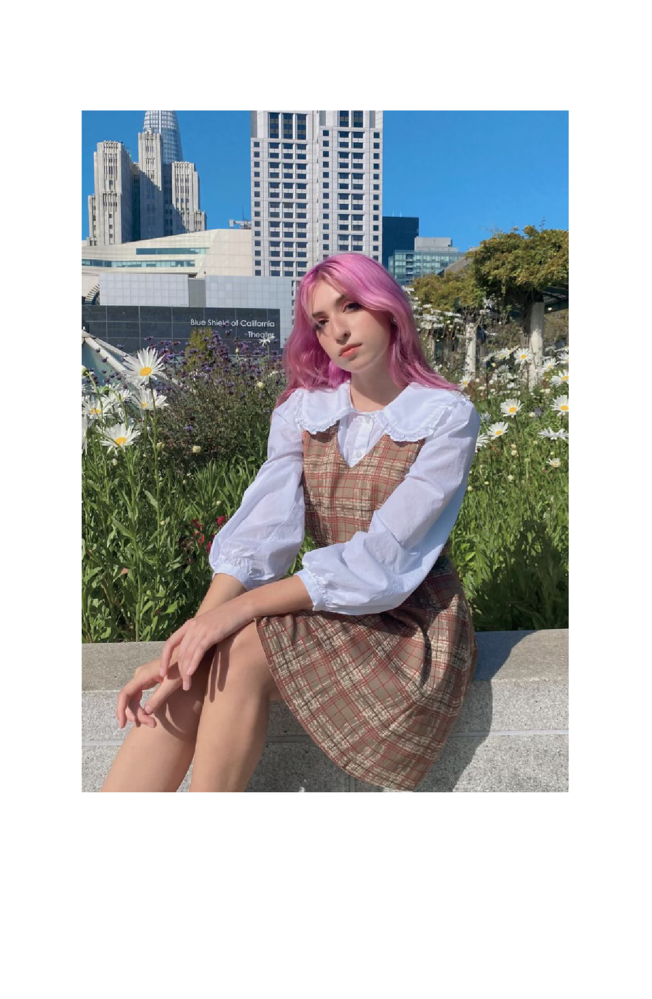
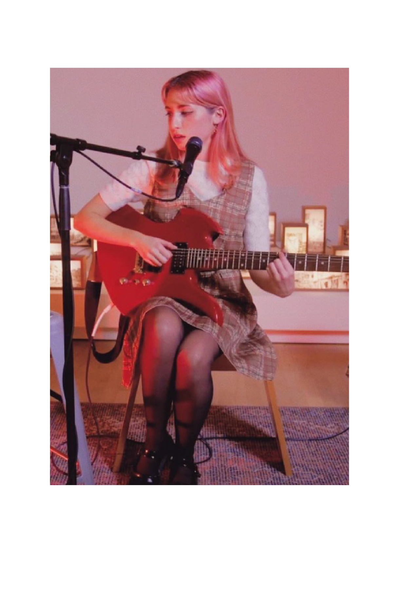
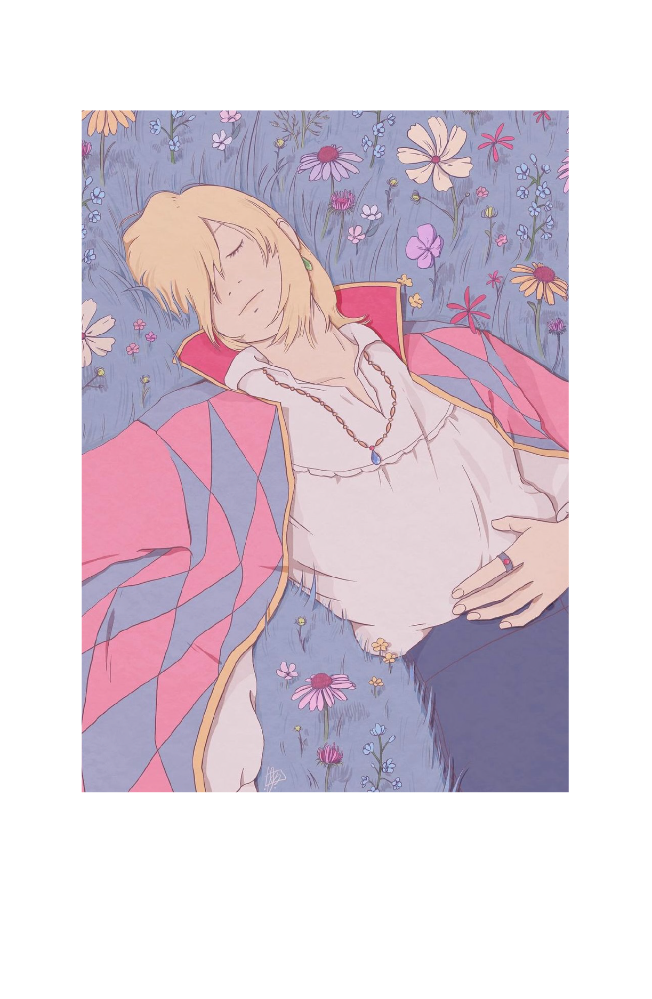

Hello there :) I am Julia Bozzo. I am a student at CSU Monterey Bay studying
Communication Design with a concentration in Visual Design as well as minoring in
Music. I love all things pink and pastel. I enjoy hanging out with my friends and
jamming to kpop music.


Not only do I love listening to music, but I also play the guitar and sing.
I record and produce my own bedroom pop music under the name Plantvibes. You
can find my music on Spotify and Apple Music.
I also have an account on Instagram dedicated to my art. Not only do I enjoy
graphic design work, but I love illustration both digitally and on paper. Here is
one I created digitally of the character Howl from the movie Howl’s moving Castle.